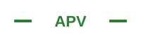

Продукция завода «Феникс»
Пластинчатые теплообменники (ПТО) российского производства — основа каталога AIPhoenix
ТП-Б-0.35
Пластинчатый ПТОТип: демонтируемый (openable)
Площадь: 0,35 м² (на пластина)
Давление: до 2,5 МПа (25 бар)
Температура: до 200°С
Профиль: TL (жёсткий, 30°)
Материал: AISI 304 / AISI 316
Уплотнения: EPDM / NBR / Viton
Модульная конструкция: от 12 до 500 пластин в пакете. Идеален для малых и средних нагрузок.
ТП-Б-0.70
Пластинчатый ПТОТип: демонтируемый
Площадь: 0,70 м² (на пластина)
Давление: до 2,5 МПа
Температура: до 200°С
Профиль: TL (жёсткий, 30°)
Материал: AISI 304 / AISI 316
Уплотнения: EPDM / NBR / Viton
Увеличенная площадь пластины — для средних и крупных объектов. Высокий k при противотоке.
ТПМ
ПромышленныйТип: промышленный демонтируемый
Площадь: 0,135–1,5 м² (на пластина)
Давление: до 2,5 МПа
Температура: до 200°С
Профиль: TL / TK (по заказу)
Материал: AISI 304 / 316 / титан
Уплотнения: EPDM / NBR / Viton
Серия для промышленных объектов: ТЭЦ, ГПЗ, химические предприятия. Высокие расходы и давления.
Пластины запасные
ЗапчастиМодели: ТП-Б, ТПМ, APR-21/43/84
Материал: AISI 304, AISI 316, титан
Профили: TK (мягкий) / TL (жёсткий)
Гофра: подбор под серию аппарата
Запасные пластины для модернизации и ремонта. Подходят к аппаратам Феникс и аналогам.
Рамы и плиты
КомплектующиеРамы: стационарная + подвижная
Направляющие: стальные, с покрытием
Болты: высокопрочные, с гайками
Размер: по серии аппарата
Комплекты рам для сборки и модернизации ПТО. Стандарт и усиленный вариант.
Уплотнения
РасходникиEPDM: вода, гликоль, до 150°С
NBR: масло, углеводороды, до 130°С
Viton: агрессивные среды, до 200°С
Форма: под серию пластины
Комплекты уплотнительных прокладок для каждой серии ПТО. Герметичность и долговечность.
Сравнение: Феникс vs ведущие бренды
Пластинчатые теплообменники: ключевые характеристики для выбора аналога
| Параметр | Феникс (Россия) | Alfa Laval (Швеция) | SWEP (Швеция) | Hisaka (Япония) | Funke (Германия) |
|---|---|---|---|---|---|
| Тип | Демонтируемый | Демонтируемый / паяный | Паяный / демонтируемый | Демонтируемый | Демонтируемый |
| Давление, МПа | до 2,5 | до 2,5 (M15: до 4,0) | до 3,0 (B30: до 10,0) | до 2,5 | до 2,5 |
| Температура, °С | до 200 | до 200 (паяный: до 100) | до 150 (паяный) | до 200 | до 200 |
| Площадь пластины, м² | 0,035–1,5 | 0,027–2,2 | 0,032–3,1 | 0,04–1,8 | 0,05–1,6 |
| Профили пластин | TK (60°) / TL (30°) | CX, LB, GL | BX, NX | QR, QP, QS | Sigma 250–1600 |
| Материал пластин | AISI 304, 316, титан | AISI 304, 316, титан, Hastelloy | AISI 304, 316 | AISI 304, 316, титан | AISI 304, 316 |
| Уплотнения | EPDM, NBR, Viton | EPDM, NBR, Viton, Neoprene | EPDM, NBR | EPDM, NBR, Viton | EPDM, NBR |
| Цена (относит.) | x1,0 (базовая) | x3,5–5,0 | x2,5–4,0 | x2,0–3,5 | x2,5–4,0 |
| Сроки поставки | 2–4 недели | 6–12 недель | 4–8 недель | 6–10 недель | 6–10 недель |
| Запчасти | В наличии (РФ) | Под заказ, склад NL | Под заказ, склад SE | Под заказ, склад JP | Под заказ, склад DE |
Бренды-аналоги в каталоге Феникс
Нажмите на карточку, чтобы перевернуть и увидеть подробности
Alfa Laval
Швеция. Лидер рынка ПТО. Серии M3/M6/M10/M15 (демонтируемые) и CB/BV (паяные).
Цена: x3,5–5,0 от Феникс
Нажмите для подробностейО бренде Alfa Laval
- Основана в 1883 году, штаб-квартира: Лунд, Швеция
- Крупнейший в мире производитель ПТО
- 140+ лет на рынке теплообменного оборудования
Ключевые серии
- M3/M6/M10/M15 — демонтируемые
- CB/BV — паяные, компактные
- GL — для пищевой промышленности
Кросс-референс с Феникс
- M6 ↔ ТП-Б-0.35 (APR-21)
- M10 ↔ ТП-Б-0.70 (APR-43)
- M15 ↔ ТПМ-0.35/0.70
SWEP
Швеция (дочерняя Danfoss). Специалист по паяным ПТО. Серии B12–B50, FP12–30.
Цена: x2,5–4,0 от Феникс
Нажмите для подробностейО бренде SWEP
- Основана в 1983 году, дочерняя компания Danfoss
- Специализация: паяные пластинчатые теплообменники
- Штаб-квартира: Мальмё, Швеция
Ключевые серии
- B12/B18/B26/B32/B45/B50 — паяные
- FP12–30 — для фреоновых контуров
- T21–T55 — промышленные
Кросс-референс с Феникс
- B12/B18 ↔ ТП-Б-0.35
- B26/B32 ↔ ТП-Б-0.70
Hisaka
Япония. Серии QR (стандарт), QP (высокое давление), QS (компакт). CPS/CSR — паяные.
Цена: x2,0–3,5 от Феникс
Нажмите для подробностейО бренде Hisaka
- Основана в 1960 году, Япония
- Один из крупнейших производителей ПТО в Азии
- Высокое качество металла и точные допуски
Ключевые серии
- QR — стандартные демонтируемые
- QP — высокое давление (до 3,0 МПа)
- QS — компактные
- CPS/CSR — паяные
Кросс-референс с Феникс
- QR30–QR50 ↔ ТП-Б-0.35
- QR70–QR90 ↔ ТП-Б-0.70
- QR130–QR250 ↔ ТПМ
Funke
Германия. Серия Sigma 250–1600. Промышленные решения для крупных объектов.
Цена: x2,5–4,0 от Феникс
Нажмите для подробностейО бренде Funke
- Funke Wärmeaustauscher, Германия
- Штаб-квартира: Оснабрюк
- Специализация: промышленные ПТО и кожухотрубные
Ключевые серии
- Sigma 250 — малая нагрузка
- Sigma 500 — средняя
- Sigma 1000 — крупная
- Sigma 2500 — экстремальная
Кросс-референс с Феникс
- Sigma 250 ↔ ТПМ-0.135
- Sigma 500 ↔ ТПМ-0.35/0.70
- Sigma 1000 ↔ ТПМ-1.5

APV
Великобритания (SPX Flow). Серии GP (стандарт), H (высокое давление), паяные A系列.
Цена: x2,5–4,0 от Феникс
Нажмите для подробностейО бренде APV
- Часть SPX Flow, Великобритания
- История более 100 лет
- Специализация: пищевая и химическая промышленность
Ключевые серии
- GP20–GP810 — демонтируемые
- H12–H52 — высокое давление
- A系列 — паяные
Кросс-референс с Феникс
- GP35/GP70 ↔ ТП-Б-0.35/0.70
- GP190/GP410 ↔ ТПМ-0.35/0.70
Sigma (Andritz)
Австрия (Andritz). Серия Sigma系列 250–2500. Тяжёлые промышленные условия.
Цена: x3,0–5,0 от Феникс
Нажмите для подробностейО бренде Sigma (Andritz)
- Концерн Andritz, Австрия
- Крупнейший поставщик промышленного оборудования
- Для целлюлозно-бумажных заводов, ГПЗ
Ключевые серии
- Sigma 250–600 — малые и средние
- Sigma 1000–1600 — крупные объекты
- Sigma 2500 — экстремальные
Кросс-референс с Феникс
- Sigma 250 ↔ ТПМ-0.135
- Sigma 1000 ↔ ТПМ-1.5
Быстрый подбор по параметрам задачи
Какой теплообменник выбрать? Ориентир по нагрузкам.
Бытовой / Малый
ГВС, отопление частного дома, малый цех
Рекомендация:
ТП-Б-0.35 (12–50 пластин)
Аналоги: SWEP B12/B18, Hisaka QR30, Alfa Laval M6
Средний / Коммерческий
Тепловые пункты, вентиляция, промышленные процессы
Рекомендация:
ТП-Б-0.70 / ТПМ-0.135
Аналоги: SWEP B26/B32, Hisaka QR90, Funke Sigma 250
Промышленный / Крупный
ТЭЦ, ГПЗ, химия, нефтегаз
Рекомендация:
ТПМ-0.35 / ТПМ-0.70 / ТПМ-1.5
Аналоги: Alfa Laval M15, Funke Sigma 500/1000, APV GP410
Онлайн-калькулятор Phoenix-select
Базовый расчёт тепловой мощности, напора и площади теплообмена
Введите параметры и нажмите «Рассчитать»